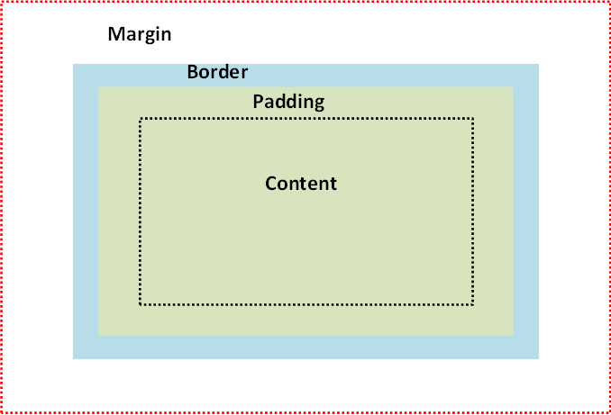
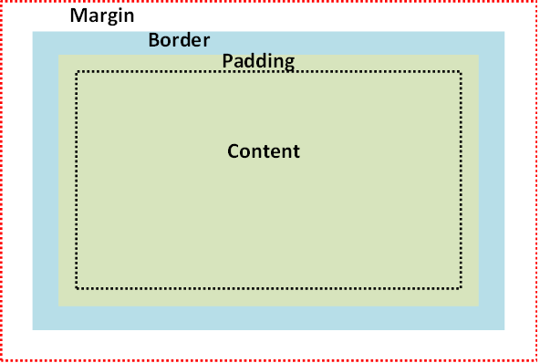

Margin vs. Border vs. Padding
By Shreya Patel
July 27th, 2014
- The space outside the blue border is considered the margin. - The margin area is transparent and clears the area around the border.
- The space between the margin and padding is considered the border. - The border goes around the padding and the content.
- The space between the border and the content is considered the padding. - The padding clears an area around the content.
- The content is where your text and images go.
You can adjust the margin, padding, and border as you please
Example A: Increased Margin
Example B: Decreased Margin and Padding
